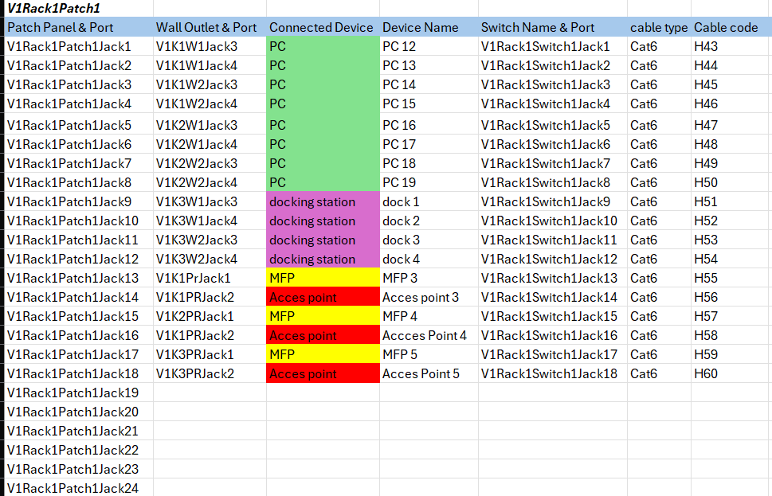
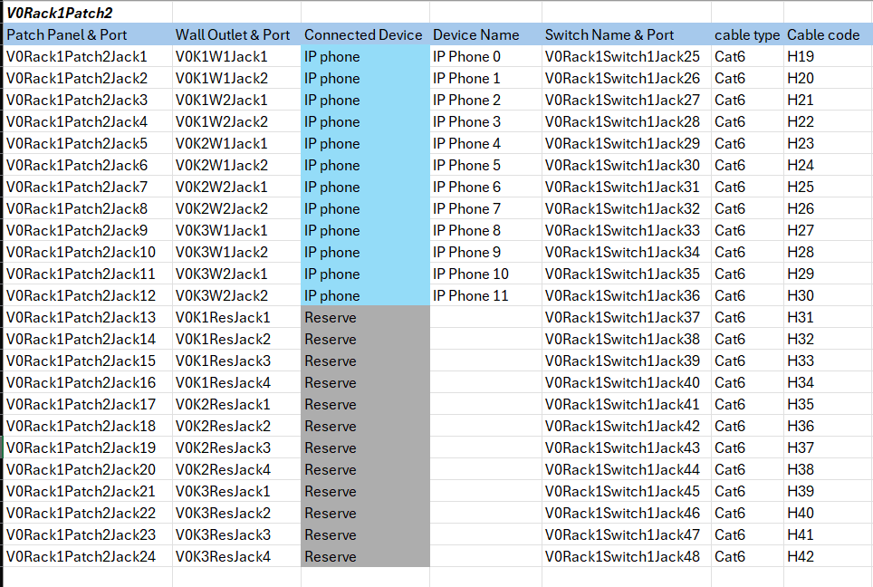
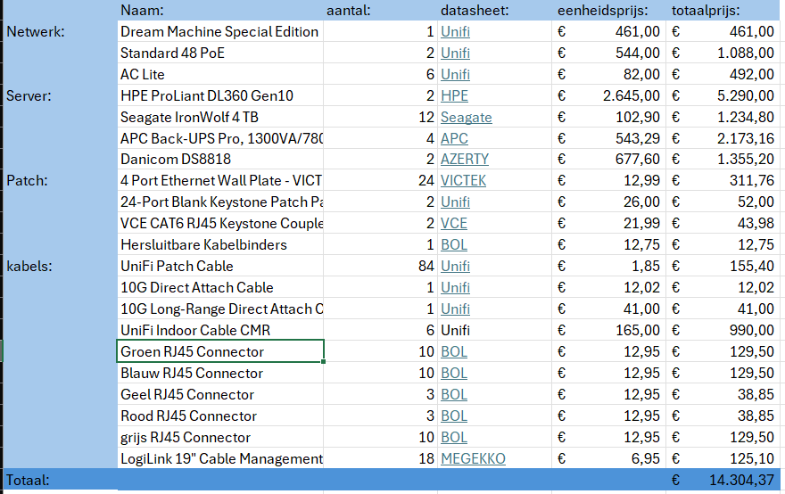
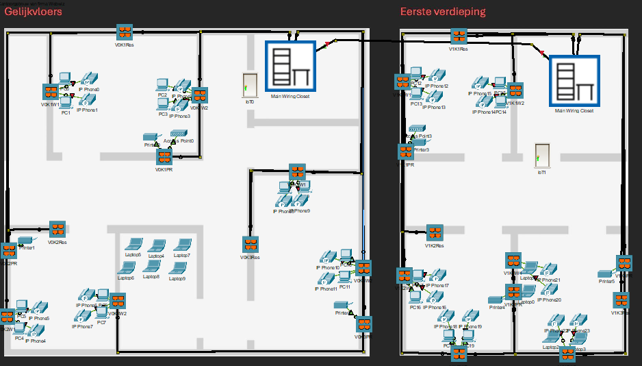
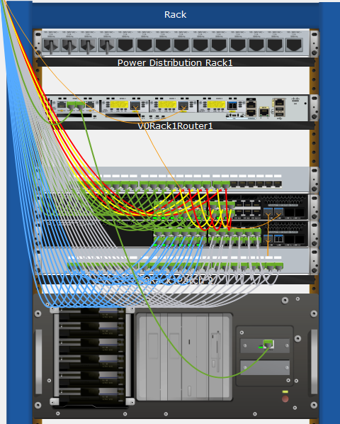
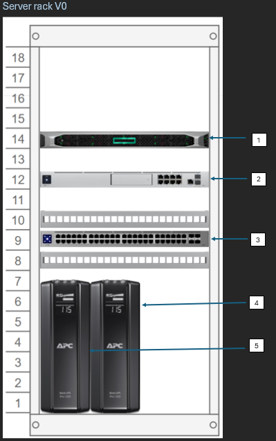

In dit project werd de opdracht gegeven om een bekabelingsplan uit te tekenen voor een klein bedrijf. Er werden een aantal details gegeven zoals het aantal werknemers, end devices en wat het bedrijf nodig heeft om te functioneren. plus de mogelijke vragen en problemen die in de toekomst opgelost moeten worden.
In totaal moesten er 4 onderdelen opgeleverd worden. Een bekabelingsplan met Packet Tracer, een patchplan, een racklayout en een aankooplijst voor de verschillende onderdelen die gebruikt worden in het plan.
Hier rechts is het plan uitgetekend in Packet tracer te zien. Hierin wordt de fysieke structuur uitgetekend inclusief de end devices en netwerkdevices. Dit geeft een goed idee van welke werken er plaats moeten vinden en wat er wel en niet mogelijk is.

Patchplan deel 1

Patchplan deel 2
Racklayout
De racklayout is gebaseerd op wat er te zien is en gestructureerd is in het fysieke bekabelingsplan. Dit als basis genomen om een racklaytou te tekenen.
Het belangrijke gedeelte van de racklayout is documenteren welke apparaten waar steken en hoeveel ruimte dat deze innemen op de serverrack
Het laatste deel hiervan is de bekabeling tussen alle netwerkcomponenten. Kijken dat dit op elkaar is afgestemd.

screenshot van de aankooplijst

Het PacketTracer bekabelingsplan
Patchplan
Voor het patchplan moet elke kabel naar elk device, naar elke wallmount en naar elk patchpanel en switch terug kunnen getraceerd worden. Dit zorgt ervoor dat je alles kan terugvinden en fouten makkelijker kan corrigeren. Een goeie documentatie is heel belangrijk hiervoor.
Het patchplan bij deze opdracht is opgesteld werkende per patchpanel. Elke poort op elke wallmount, switch en patchpanel heeft een unieke code die aangeeft welke switch, wallmount of patchpanel en welke poort op dit device er wordt gebruikt voor deze kabel. Ook kan je de locatie in het gebouw bepalen door code in de naam.
Om dit op een geordende en gemakkelijke manier te doen is het bekabelingsplan is samenwerking met het fysieke plan gemaakt. Elke kabel die daar getrokken wordt is direct in het bekabelingsplan opgenomen en alle benameningen zijn juist gezet
Kleuren
Afkortingen
Kleur
Apparaat
Afkorting
Betekenis
Groen
PC’s
V
Verdiep
Blauw
IP Phone
K
Kantoor
Geel
MFP
W
Workstation
Rood
Access Point
PR
Router/Printer
Paars
Docking Station
Res
Reserve
Grijs
Reserve
U
Uninterrupted Power Supply
De bovenstaande tabel geeft een verduidelijking van de afkortingen en kleuren die er gebruikt worden in het plan zelf. De namen die bestaan uit een samenstelling van de afkortingen zorden hierdoor snel duidelijk.

racklayout in packet tracer

racklayout uitgewerkt
Aankooplijst
Het laatste deel is de aankooplijst. Hierin worden, buiten de end devices, alle gebruikte apparatuur in opgelijst. Zodat alles een rpijskaartje krijgt. Alles van kabels tot sxitches tot allmounts en kabelgoten wordt in de lijst opgenomen.
Belangrijk bij deze aankooplijst is dat er links zijn naar de datasheets. Deze worden gemaakt door de producten van het device en zorgt ervoor dat je alle correcte specificaties hebt. Hier kan je dan op terugvallen mocht dit nodig zijn. En je weet veel beter wat je in huis haalt van devices. Dit laatste is ook belangrijk voor de certificering van de devices.